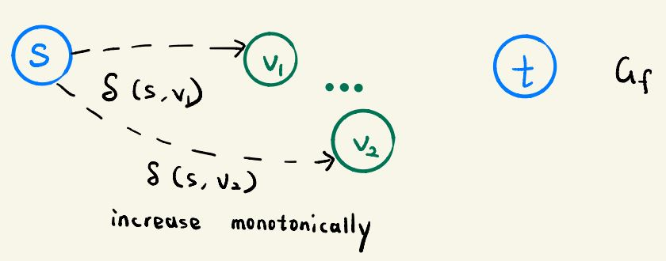
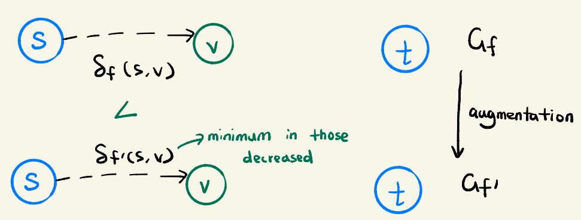
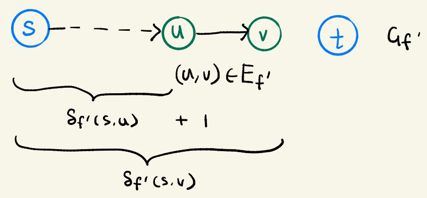
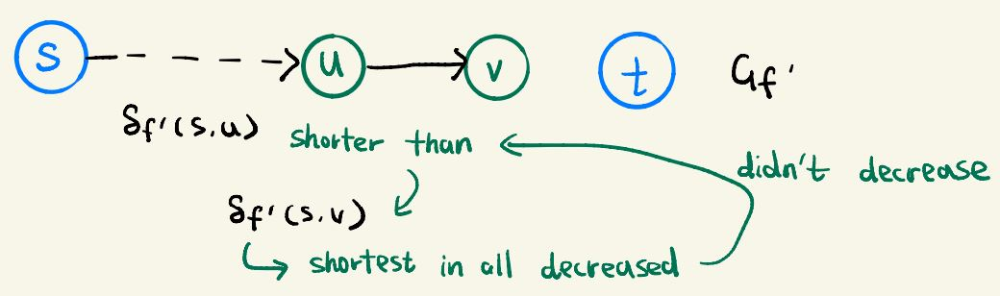
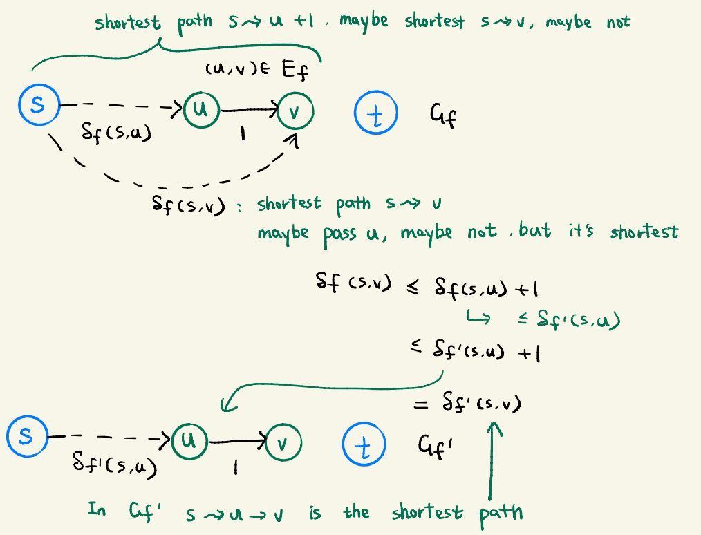
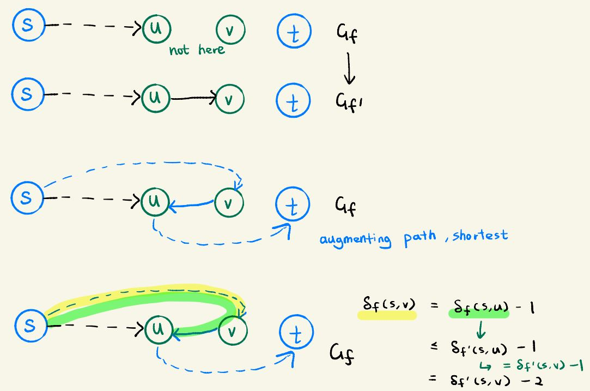
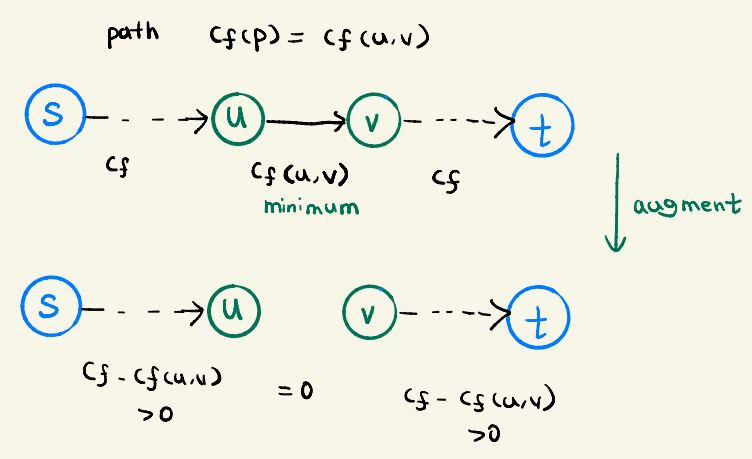
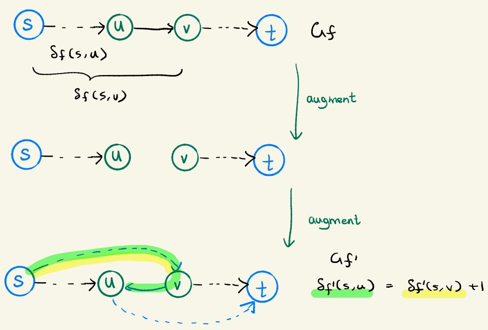

It is possible to prove that the runtime of Edmonds-Karp is O(VE²)
Notation: Define δf(u,v) for the shortest-path distance from u to v in Gf, where each edge has unit distance
Lemma 26.7: For all vertices v ∈ V - {s,t} the shortest-path distance δf(s,v) in residual network
increases monotonically with each flow augmentation

Proof Suppose for sake of contradiction that for some vertex v ∈ V - {s,t} there is a flow augmentation that causes the shortest path distance to decrease.
Let f be the flow just before the augmentation, f' be the one afterwards.
Let v be the vertex with minimum δf '(s,v) in the set of vertices whose distance was decreased
so that δf '(u,v) < δf(u,v)

Let p = s ∼ u → v be a shortest path from s to v in Gf',
so that (u,v) ∈ Ef', and δf '(s,u) = δf '(s,v) - 1

Because we chose v to have the minimum δf '(s,v) in those decreased,
It is not possible that u has a smaller δf '(s,u) and it is decreased
And we know s ∼ u → v is a shortest path, thus s ∼ u is also a shortest path which is shorter than s ∼ v.
So if δ(s,u) is decreased, we will have a vertex whose distance was decreased, and also δf '(s,u) < δf '(s,v)
Which contradicts with how we chose v as the minimum one.
Since δf '(s,u) ≤ δf '(s,v) must be true, the explaination to avoid contradiction is that δ(s,u) doesn't decrease
Which means δf '(s,u) ≥ δf (s,u)

We claim that (u,v) not in Ef. Suppose for sake of contradiction, (u,v) is in E
δf(s,v) ≤ δf (s,u) + 1
≤ δf '(s,u) + 1
= δf '(s,v)
Which contradicts the assumption that δf '(s,v) < δf(s,v)

Now we know (u,v) is not in Ef but in Ef'
Which means this edge appears after the augmentation.
This can only happen when the flow from v to u is previously 0 but increased.
Beause Edmonds-Karp always pick the shortest path to augment, so the shortest path from s to u in Gf has (v,u) as last edge
Therefore, δf(s,v) = δf(s,u) - 1
≤ δf '(s,u) - 1
= δf '(s,v) - 2
Which contradicts the assumption that δf '(s,v) < δf(s,v)

Thus we conclude our assumption that such a vertex v exists.
And because the smallest one doesn't exist, such vertex that decrease all not exist. Thus the distance cannot decrease.
Lemma 26.8: The total number of flow augmentations performed by the algorithm is O(VE)
Proof We define an edge (u,v) in residual network as critical on an augmenting path p,
if the residual capacity of p is the residual capacity of (u,v)
That is cf(p) = cf(u,v)
After we augmented flow along an augmenting path, any critical edge on the path disappears from the residual network
And also, at least one edge on path p must be critical
We will show that each of the |E| edges can become critical at most |V|/2 times

Let u and v be vertices in V with edge (u,v)
When edge (u,v) is critical for the first time, since we always augment the shortest path, we have:
δf(s,v) = δf(s,u) + 1
And (u,v) disappears in the residual network.
And it cannot reappear until the flow from u to v is decreased, which occurs when (v,u) appears
Suppose f' is the flow after (u,v) reappear and (v,u) appears, we have:
δf '(s,u) = δf '(s,v) + 1

Since δf(s,v) ≤ δf '(s,v) by Lemma 26.7, we have:
δf '(s,u) = δf '(s,v) + 1
≥ δf(s,v) + 1
= δf(s,u) + 2
This means, between the first and next time (u,v) become critical, the distance from s to u increase by at least 2
The distance between s and u is initially 0, and cannot exceed |V|-2 since u is not s or t
Thus it can be critical for at mist |V|-2/2 = |V|/2 -1 times before it is unreachable
Since there're O(E) number of verices, the total number of possible critical edges in all the time is O(VE)